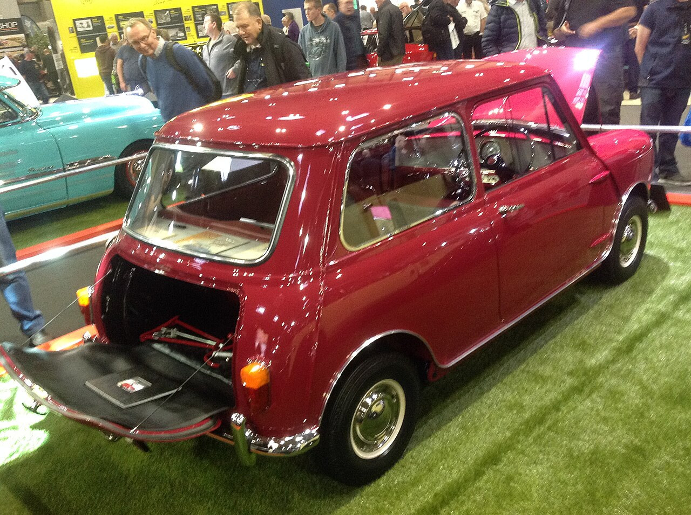
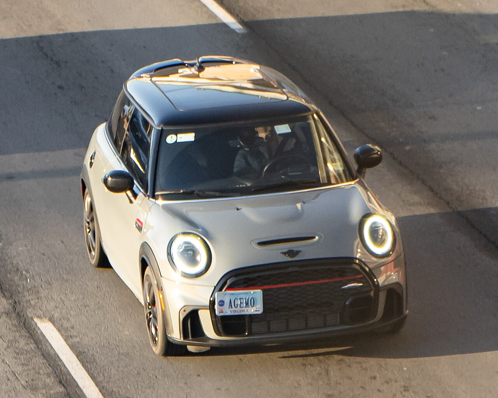
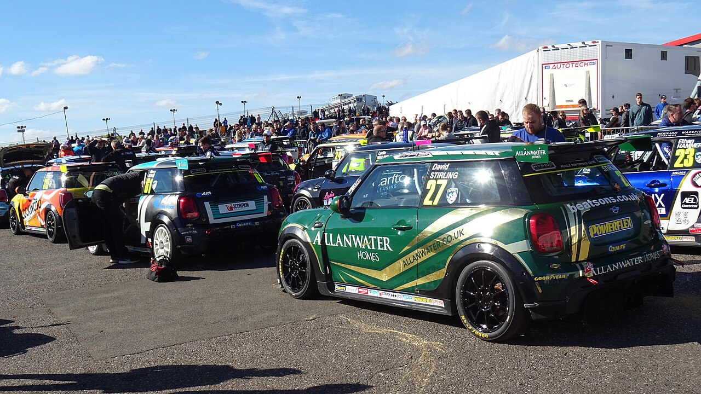

Cult Classics · CC.03 · Applied Mechanics · 16 min read
Wheels at the Corners
From the 1959 transverse blueprint to the F56 John Cooper Works Hot Chili and North American lineup, told one engineering move at a time.
The thesis in the title comes from Sir Alec Issigonis’s 1959 packaging constraint: push a wheel to each corner and mount the four-cylinder sideways over its own gearbox. Every era since—and both sides of the US–Mexico North American market—adapted that compact front-drive stance to stricter emissions, crash rules, and track heat.

In 1959 the British Motor Corporation launched a 3.05-meter saloon engineered by Alec Issigonis and Alex Moulton with a transverse engine sitting directly over an integrated-sump transmission. That layout left 80% of the floorpan area free for four adults and luggage. Formula One constructor John Cooper saw something else in the 2,036 mm wheelbase and 580–686 kg shell: a chassis with minimal body roll that kept momentum through tight bends.
Classic Mini record Alec Issigonis bio John Cooper bio
Cooper pressed BMC management to commission 1,000 homologation units of a tuned 997 cc car in 1961, adding twin SU carburetors and front disc brakes when small saloons still ran drums. Between 1959 and 2000 roughly 5.38 million classic Minis left the line, and when BMW took the marque forward at Plant Oxford in 2001, the John Cooper Works name grew from a dealer pulley kit into the factory F56 B48 flagship featured under the clamshell bonnet below.
Part I · Packaging
1959–2000
The classic Mini solved a dimension constraint before anyone spoke about handling. Turning the A-series four-cylinder sideways over its sump transmission cut the engine bay down enough to place a 2,036 mm wheelbase inside a 3,054 mm body—two-thirds of the car sitting between the axles.
Two-thirds of the car’s length sat between its axles—the layout came first, the cornering followed.
When John Cooper pushed BMC to homologate the 1961 Mini Cooper, he paired that wide wheelbase-to-length stance with front disc brakes and a longer-stroke 997 cc engine. In the Brands Hatch section below, a modern 998 cc Mini Se7en built to that classic silhouette still posts laps inside 59 seconds around Paddock Hill Bend.
ADO15 1959–2000 · Cooper & S
Transverse sump packaging, rubber cones, front discs
Every millimeter of the classic Mini obeyed packaging geometry: 3,054 mm overall length, 2,036 mm wheelbase, 1,410 mm width and 10-inch wheels so arches never stole cabin footwell. Pat Moss and Ann Wisdom scored the car’s first international rally victory at the 1962 Tulip Rally before the 1963 Cooper S brought nitrided crankshafts in 1,071 cc, 970 cc and 1,275 cc forms for 1964, 1965 and 1967 Monte Carlo wins; early exports reached the US and Canada as the Austin and Morris 850.
- Footprint
- 3,054 mm length · 2,036 mm wheelbase Classic Mini record
- Kerb weight range
- 580–686 kg Classic Mini record
- 1961 Mini Cooper
- 997 cc, 55 bhp, front discs Classic Mini record
- Cooper S bores
- 970 · 1,071 · 1,275 cc Classic Mini record
Read 2026-11-15

Part II · Forced Induction
2001–2013
Across two generations in twelve years, BMW-built MINIs ran both halves of the forced-induction textbook. The R53 Cooper S bolted a crank-driven Roots supercharger onto a 1.6-liter Tritec block, forcing the battery under the boot floor; six years later the R56 switched to a twin-scroll exhaust turbocharger.
MINI Hatch record JCW archive summary
Crank-driven immediacy on the R53 gave way to separated exhaust pulses on the R56.
Why swap a supercharger for a twin-scroll turbo? Two independent engine studies explain the trade in general spark-ignition engines (neither tested a Mini): mechanical supercharging tracks the crankshaft without delay but consumes shaft work at part load, while twin-scroll turbines pair cylinders whose exhaust blowdown pulses stay separated by 360 crank degrees, preserving pulse energy and spooling faster than a single-entry volute.
R53 2001–2006 · Supercharged
Oxford rebirth, crank-driven supercharger, JCW pulley kits
BMW moved assembly to Plant Oxford and built Frank Stephenson’s 2001 Cooper S (R53) around a 1.6-liter Tritec engine with a Roots supercharger, six-speed Getrag manual and central exhaust—pushing the battery under the boot floor. In North America (both the US and Mexico), the supercharged Hardtop 2 Door set the core JCW dealer-kit template: an 11% smaller pulley and head work to 200 bhp in 2003, 210 bhp with 380 cc/min injectors in 2004, and 444 US-bound cars among the 2,000-unit 2006 GP Kit (218 PS, −40 kg).
- Dimensions
- 3,655 mm Cooper S · 2,466 mm wheelbase MINI Hatch record
- JCW 200 / 210 kits
- 11% smaller pulley · 380 cc/min injectors JCW archive summary
- 2006 JCW GP Kit
- 218 PS · 250 Nm · ~40 kg lighter (2,000 built) MINI Hatch record
Read 2026-11-15

US R53 Cooper S photo FMVSS 108 lighting Frank Stephenson bio
R56 2006–2013 · Twin-scroll
Exhaust-pulse turbocharging, fixed headlamps, factory JCW
Pedestrian-impact rules and efficiency shifted the second generation (R56) onto a 1.6-liter turbo engine with fixed headlamps mounted inside the wings rather than rising inside the clamshell bonnet. In mid-2008 BMW brought John Cooper Works in-house as a full factory build: 155 kW (208 bhp), 260 Nm (280 Nm on overboost), 316 × 22 mm perforated front discs under red four-piston Brembo calipers, Dynamic Traction Control and brake-based EDLC. The 2013 GP2 made 218 hp (214 hp US spec) and lapped the Nürburgring in 8:23.
- Factory JCW (2008)
- 1.6 L turbo · 155 kW (208 bhp) · 260/280 Nm JCW archive summary
- Factory JCW brakes
- 316 × 22 mm front · 4-piston Brembo JCW archive summary
- 2013 JCW GP2
- 218 hp (214 hp US) · 8:23 Nordschleife (2,000 built) JCW archive summary
Read 2026-11-15

Part III · Track, Displacement & North America
2014–2024
Moving the third-generation F56 onto BMW’s UKL front-drive architecture broke the 1.6-liter ceiling and widened the footprint: +42 mm front track, +34 mm rear track and a 2,495 mm wheelbase. For the John Cooper Works flagship, the 1,998 cc B48A20 delivered 170 kW (231 PS / 228 hp SAE) and 320 Nm (236 lb-ft), combining broader low-rev torque with physical room for larger front brake rotors.
MINI Hatch record BMW B48 / B46
Same 170 kW engine across continents—printed as 228 hp US or 231 PS in Mexico depending on test unit.
Extra nose cooling matters on a short circuit like Brands Hatch Indy, and North America adds its own engineering twist: US and Mexican F56 JCW hatches usually share the same Oxford mechanicals, yet lighting laws (FMVSS 108 vs. UNECE), unit conventions (228 hp vs. 231 PS), top trim names (Iconic vs. Hot Chili), and 2024 J01 availability set them cleanly apart.
MINI Hatch record MINI CHALLENGE JCW FMVSS 108 lighting SAE hp vs DIN PS
F56 2014–2024 · JCW Hot Chili
2.0 L B48 four-cylinder, widened track, cooling over fog lamps
Riding on BMW’s UKL front-drive platform, the F56 grew 98 mm in length, 28 mm in wheelbase (2,495 mm) and +42 mm in front track (+34 mm rear) over the R56. Its 1,998 cc B48A20 TwinPower Turbo engine delivers the same 170 kW in North America and Europe—printed as 228 hp / 236 lb-ft in US sheets and 231 PS / 320 Nm in Mexican and European sheets—paired with four-piston red calipers and front cooling ducts replacing fog lamps. In Mexico, the top-tier Hot Chili package carries LCI Union Jack tail lamps without US arch reflectors; in 2020 the GP3 rose to 225 kW (306 PS) and 450 Nm.
- Platform & stance
- BMW UKL · 2,495 mm wheelbase · +42/+34 mm track MINI Hatch record
- F56 JCW (B48A20)
- 1,998 cc · 170 kW (228 hp US / 231 PS) · 320 Nm (236 lb-ft) BMW B48 / B46
- 0–100 km/h & weight
- 6.3 s manual / 6.1 s auto · 1,205 / 1,220 kg MINI Hatch record
- LCI-1 & LCI-2 updates
- 2018 8-speed auto · Union Jack rear lights MINI Hatch record
- 2020 JCW GP3
- 225 kW (306 PS) · 450 Nm · 5.2 s (3,000 built) MINI Hatch record
Read 2026-11-15


The cornering stance bench
“Wheels at the corners” is not a slogan; it is lever-arm arithmetic. As cornering g rises, weight shifts from the inside tire to the outside tire by ΔF_z = m_axle · g · a_y · h_cg / t_track. Because a tire loses peak grip slightly faster on the overloaded side than it gains on the unloaded side, total axle grip drops.
0.85 g cornering stance.
Computed, not measured: F56 1,485 mm track width comes from BMW dimensions; all other inputs (axle mass, h_cg and tire load sensitivity k_load) are MODEL values.
Why track width and anti-roll split govern yaw balance: Ricco and colleagues (2020) model how varying the front-to-total anti-roll moment distribution controls steady-state cornering and yaw rate through differential lateral load transfer across front and rear axles. That paper studied an electric AWD test platform, not a Mini, but the load-transfer geometry is the same physics.
The Paddock Hill brake bench
Into Paddock Hill Bend at Brands Hatch, braking from high speed turns kinetic energy ½·m·(v₁² − v₂²) into rotor heat. Larger ventilated discs carry more iron thermal mass so each stop raises disc temperature less before airflow has to carry that heat away.
Single-stop rotor heating.
Adiabatic single-stop upper bound (neglecting pad/hub conduction and airflow convection): 1,220 kg F56 JCW kerb weight from Wikipedia Hatch table; rotor masses, front bias and heat capacity are MODEL values.
Why front cooling ducts replace fog lamps on the F56 JCW: Adamowicz & Grzes (2011) solve 3D transient heat conduction and convective cooling on solid automotive brake discs, showing how repeated braking relies on convective heat transfer between stops to hold peak surface temperature down. Their model examined general automotive discs, not a Mini.
Part IV · Two Architectures
2024–
Rather than force electric batteries and a two-liter turbo onto one floorpan, MINI split the fourth generation in November 2024. The Oxford-built petrol F66 JCW pushes B48 torque from 320 Nm to 380 Nm (280 lb-ft in US sheets) through a dual-clutch transmission, while the J01 JCW Electric pairs 190 kW (258 hp) and 350 Nm of instant pull with a 20 kW boost function—available in Mexico and Europe but not the US.
BMW Group 2024 MINI USA JCW MINI Hatch record
Same front-drive physics from 1959—answered now by 380 Nm combustion and 258 hp electric drive.
Both architectures still share the front-drive cornering limit born in 1959: two front tires asked to steer and pull simultaneously, governed by axle lateral load transfer and brake-based yaw stabilization.
F66/J01 2024– · Two paths
380 Nm petrol dual-clutch alongside 258 hp electric torque
In November 2024, MINI split the fourth generation across two factories and regulations. The Oxford-built F66 petrol JCW (sold across Europe, Mexico, and MINI USA at 228 hp / 280 lb-ft, 0–60 mph in 5.9 s and 155 mph) raises B48 torque to 380 Nm through a 7-speed DCT (no manual), reaching 0–100 km/h in 6.1 s and 250 km/h. Alongside it in Mexico and Europe sits the China-built J01 JCW Electric (190 kW / 258 hp, 350 Nm, 5.9 s), which is not imported by MINI USA.
- F66 petrol JCW
- 2.0 L turbo · 170 kW (228 hp US / 231 PS) · 380 Nm (280 lb-ft) · DCT BMW Group 2024
- F66 NA & metric sprint
- 0–60 mph 5.9 s (US) · 0–100 km/h 6.1 s · 250 km/h MINI USA JCW
- J01 JCW Electric (MX/EU)
- 190 kW (258 hp) · 350 Nm · 5.9 s · 54.2 kWh BMW Group 2024
Read 2026-11-15
Ghost race: Brands Hatch Indy (Kent, UK)
Few circuits belong to the Mini like Brands Hatch Indy—1.208 miles (1,944 m) through Paddock Hill Bend, Druids, Graham Hill, Cooper Straight and Clearways, where Formula Mini Se7en first raced in 1966. Below sit eight official class lap records from the Mini 7 Racing Club and MINI CHALLENGE UK. Press start and all eight run together at 10× speed.
- ADO15 · Mini Se7en S-Class (1,293 cc mild) (2024)
- ADO15 · Mini Se7en (998 cc A-series) (2023)
- R50 · MINI CHALLENGE Cooper (Race) (2025)
- R50 · MINI CHALLENGE Cooper (Qual.) (2025)
- ADO15 · Mini Libre (up to 1,380 cc) (2018)
- ADO15 · Mini Miglia (1,293 cc slicks) (2024)
- F56 · MINI CHALLENGE JCW (Race) (2022)
- F56 · MINI CHALLENGE JCW (Qual.) (2022)
Eight cars on the Brabham grid.
Schematic Indy contour showing Paddock Hill, Druids, Cooper Straight and Clearways. Each dot moves at the constant average speed its lap time implies at 10× speed; real laps brake hard into Paddock Hill and Druids. Hollow dots mark rows where the source table leaves distance blank.
| # | Era | Class record | Year | Lap | Driver | Listed speed | Length |
|---|---|---|---|---|---|---|---|
| 1 | ADO15 | Mini Se7en S-Class (1,293 cc mild) | 2024 | 0:58.822 | Frazer Hack | 73.92 mph | 1.208 mi |
| 2 | ADO15 | Mini Se7en (998 cc A-series) | 2023 | 0:58.247 | Mike Jordan | 74.65 mph | 1.208 mi |
| 3 | R50 | MINI CHALLENGE Cooper (Race) | 2025 | 0:56.507 | Jenson Mason | not stated | blank |
| 4 | R50 | MINI CHALLENGE Cooper (Qual.) | 2025 | 0:56.221 | Gabe Fairbrother | not stated | blank |
| 5 | ADO15 | Mini Libre (up to 1,380 cc) | 2018 | 0:54.800 | David Franks | 79.35 mph | 1.208 mi |
| 6 | ADO15 | Mini Miglia (1,293 cc slicks) | 2024 | 0:53.979 | Rupert Deeth (listed Rupery Deeth) | 80.56 mph | 1.208 mi |
| 7 | F56 | MINI CHALLENGE JCW (Race) | 2022 | 0:50.502 | Sam Weller | not stated | blank |
| 8 | F56 | MINI CHALLENGE JCW (Qual.) | 2022 | 0:50.175 | Jack Mitchell | not stated | blank |
Mini 7 lap records MC Cooper records MC JCW records Brands Hatch
What the arithmetic shows: across those eight official class records, the F56-based JCW qualifying lap (50.175 s) is 8.65 seconds faster per 50-second lap than the entry Classic S-Class record (58.822 s). Among classic A-series entries, Goodyear slicks and full Miglia tune shave 4.27 seconds off the 998 cc cross-ply Se7en.
Same circuit, not the same day or class rules: classic Se7en and Miglia cars carry 998–1,380 cc A-series engines on 10-inch or small race wheels; MINI CHALLENGE Trophy/Cooper cars run 130 bhp 1.6 L engines (~1,110 kg); JCW Class cars run Gen 3 F56 2.0 L turbo hardware (240–265 bhp, ~1,180 kg). The Mini 7 table states the 1.208 mi length and mph; MINI CHALLENGE Stats prints time only, so those four speed columns stay hollow.

Part V · Mechanics Lab: the physics, worked
Model · Derived · Checked by script
The history above traces how five Mini eras changed proportions, boost, regional regulations and rotors. Below are four computed models you can inspect. Any input without a listed source is marked MODEL: an illustrative value to expose the mechanism, not a measurement of any Mini. A verifier in the repository recomputes every number.
1 · Lateral load transfer & tire load sensitivity
Because peak lateral force per unit vertical load falls slightly with load (μ₀ − k·F_z), shifting ΔF_z from inside to outside removes 2·k·(ΔF_z)² of total axle grip even before the inside wheel lifts. Widening the track from 1.36 m to 1.485 m and lowering h_cg drops that loss sharply.
ΔF_z = m_axle · g · a_y · h_cg / t_trackF_y,loss = 2 · F_y(F_z0) − (F_y(F_z0 − ΔF_z) + F_y(F_z0 + ΔF_z)) = 2 · k · (ΔF_z)²
| Stance | h_cg / Track | Transfer ΔF_z | Inside F_z | Outside F_z | Axle grip F_y | Loss (DERIVED) |
|---|---|---|---|---|---|---|
| Tall & narrow box (MODEL) | 0.58 m / 1.360 m | 2,632 N | 998 N | 6,261 N | 6,941 N | 485 N |
| F56 JCW track (1,485 mm) | 0.49 m / 1.485 m | 2,036 N | 1,594 N | 5,666 N | 7,136 N | 290 N |
| Lowered track stance (MODEL) | 0.45 m / 1.500 m | 1,851 N | 1,779 N | 5,481 N | 7,186 N | 240 N |
Inputs: front-axle mass 740 kg (MODEL), a_y 0.85 g (MODEL), mu_0 1.15 (MODEL), load sensitivity k 3.5e-05 N^-1 (MODEL), F56 track 1.485 m (BMW dimensions).
2 · Single-stop brake rotor thermal rise
Decelerating a 1,220 kg car from 160 km/h to 80 km/h sheds 903.7 kJ of kinetic energy; at a 72% front braking split, each front disc absorbs 325.3 kJ. In an adiabatic single-stop upper bound, tripling rotor thermal mass cuts temperature rise by two-thirds.
E_disc = ½ · f_front · (½ · m_car · (v₁² − v₂²))ΔT_adiabatic = E_disc / (m_disc · c_p)
| Front rotor class | Disc mass | Energy / disc | ΔT (DERIVED) | Peak (25 °C base) |
|---|---|---|---|---|
| Small solid disc (3.2 kg, MODEL) | 3.2 kg | 325.3 kJ | +221.0 °C | 246.0 °C |
| Mid vented disc (7.4 kg, MODEL) | 7.4 kg | 325.3 kJ | +95.6 °C | 120.6 °C |
| Large 4-pot vented disc (9.8 kg, MODEL) | 9.8 kg | 325.3 kJ | +72.2 °C | 97.2 °C |
Inputs: car mass 1,220 kg (F56 JCW auto), stop 160 to 80 km/h (MODEL), front braking share 0.72 (MODEL), cast-iron c_p 460 J/(kg·K) (MODEL).
3 · Brands Hatch Indy lap speeds (1.208 miles)
Dividing 1,944.09 m (1.208 × 1,609.344 m) by lap time yields average speed—computed ONLY for the four Mini 7 Racing Club rows that print 1.208 mi. The four MINI CHALLENGE rows stay blank rather than borrowing distance across tables.
L = 1.208 mi × 1,609.344 m/mi = 1,944.09 m · v̄ = L ÷ t_lap
| Era | Class record | Year | Lap | Average (DERIVED) | mph (DERIVED) |
|---|---|---|---|---|---|
| ADO15 | Mini Se7en S-Class (1,293 cc mild) | 2024 | 0:58.822 | 119.0 km/h | 73.93 mph |
| ADO15 | Mini Se7en (998 cc A-series) | 2023 | 0:58.247 | 120.2 km/h | 74.66 mph |
| ADO15 | Mini Libre (up to 1,380 cc) | 2018 | 0:54.800 | 127.7 km/h | 79.36 mph |
| ADO15 | Mini Miglia (1,293 cc slicks) | 2024 | 0:53.979 | 129.7 km/h | 80.56 mph |
4 · US 228 hp vs. Mexico/EU 231 PS conversion (identical 170 kW engine)
Why an identical 170.0 kW shaft rating prints as 228 hp in US sheets and 231 PS (or 231 hp metric) in Mexico and Europe: SAE J1349 mechanical horsepower defines 1 hp as 745.70 W (170,000 / 745.70 = 227.97 hp -> 228 hp), whereas DIN 66036 metric horsepower defines 1 PS as 735.50 W (170,000 / 735.50 = 231.14 PS -> 231 PS). Likewise, 320 Nm converts to 236 lb-ft and F66’s 380 Nm converts to 280 lb-ft.
hp_SAE = 170,000 W ÷ 745.70 W/hp · PS_DIN = 170,000 W ÷ 735.50 W/PS · lb-ft = N·m ÷ 1.3558
| Standard | Market sheets | Power (from 170.0 kW) | F56 torque (320 Nm) | F66 torque (380 Nm) |
|---|---|---|---|---|
| SAE mechanical (745.70 W/hp) | US / North America | 227.97 hp (228 hp) | 236.0 lb-ft (236 lb-ft) | 280.3 lb-ft (280 lb-ft) |
| DIN metric PS (735.50 W/PS) | Mexico & Europe | 231.14 PS (231 PS) | 320 Nm | 380 Nm |
Sixty-five years after a 3.05-meter commuter squeezed its four cylinders sideways to keep a wheel in each corner, the proportions still explain the drive: wide stance, short overhangs, front rotors sized for repeat stops, and an unbroken human relay from Longbridge drafting tables and Brands Hatch bends to North American tarmac.
Visual Archive (8 Plates)
Every documentary photograph, drafting sketch and composite visual study on this page, with credits and full-screen inspection.
US R53 Cooper S photo FMVSS 108 lighting Frank Stephenson bio
Sources
All read on 2026-11-15. BMW/MINI marks official BMW Group & MINI USA pages; Club/Track marks UK Mini 7 Racing Club, MINI CHALLENGE and circuit records; Record marks encyclopedic specification and regulatory tables; Paper marks peer-reviewed studies checked in Crossref and Scite on the same day (zero retractions; they explain general mechanics and did not test a Mini); Photo Archive marks Wikimedia Commons CC BY 2.0 / CC BY 4.0 photography.
- Record Wikipedia, “Mini” (1959–2000 ADO15 dimensions, Moulton rubber cones & Hydrolastic, Cooper 997 cc, Cooper S 970/1,071/1,275 cc, North America Austin/Morris 850, 5.38 million built)
- Record Wikipedia, “Mini Hatch” (R50/R53, R56, F56, J01/F66 specifications, dimensions, US vs. EU lighting/lineup differences, LCI Union Jack rear lights, and GP editions)
- Record Wikipedia, “John Cooper Works” (2002 founding by Michael Cooper, R53 200/210 bhp kits, R56 factory 155 kW JCW with 316 mm Brembo brakes, GP2 218 hp / 214 hp US & 8:23 lap)
- BMW/MINI BMW Group Newsroom, “Even more performance - even more choice: The new MINI John Cooper Works model family” (13 Nov 2024: F66 170 kW / 231 hp / 380 Nm DCT; J01 190 kW / 258 hp / 350 Nm)
- BMW/MINI MINI USA, “The John Cooper Works Family” (US JCW 2 Door 228 hp / 280 lb-ft / 0–60 mph 5.9 s / 7-speed DCT; Pat Moss 1962 Tulip Rally; Luis A. Perocarpi 2008 LAP Motorsports MINI JCW Team)
- Record Wikipedia, “Alec Issigonis” (1906–1988, 1956 Suez crisis XC/9003 -> ADO15 rapid engineering, 1969 Knight Bachelor)
- Record Wikipedia, “John Cooper (car maker)” (1923–2000, Cooper Car Company 1946 with Charles Cooper, Mini Cooper homologation)
- Record Wikipedia, “Frank Stephenson” (1959–, lead exterior designer of the 2001 R50/R53 MINI Hatch rebirth)
- Record Wikipedia, “BMW B48” (170 kW B48A20 JCW tune and US SULEV B46 emissions variant)
- Record Wikipedia, “Federal Motor Vehicle Safety Standard 108” (49 CFR 571.108 US lighting and side-marker rules from 1968 vs. UNECE type approval)
- Record Wikipedia, “Horsepower” (mechanical/SAE 745.7 W vs. DIN 66036 metric PS 735.49875 W, explaining 170 kW -> 228 hp US vs. 231 PS metric)
- Club/Track Mini 7 Racing Club, class overview (1966 Brands Hatch Se7en debut, Se7en 998 cc, S-Class 1,293 cc, Miglia 1,293 cc slicks, Libre)
- Club/Track Mini 7 Racing Club, “Lap Records” (Brands Hatch Indy 1.208 miles: Se7en S-Class, Se7en, Miglia, Libre)
- Club/Track MINI CHALLENGE UK, “Trophy Class” specification (1.6 L naturally aspirated 130 bhp, 6-speed manual, ~1,110 kg)
- Club/Track MINI CHALLENGE Stats, “Cooper Lap Records” (Brands Hatch Indy qualifying 56.221 s and race 56.507 s)
- Club/Track MINI CHALLENGE UK, “JCW Class” specification (Gen 3 F56 hatch, 2.0 L turbo 240–265 bhp, Quaife sequential/LSD, Alcon brakes, ~1,180 kg)
- Club/Track MINI CHALLENGE Stats, “JCW Lap Records” (Brands Hatch Indy qualifying 50.175 s and race 50.502 s)
- Club/Track Wikipedia, “Brands Hatch” (Kent, England; 1.208 mi / 1.944 km Indy circuit opened 1950)
- Paper Hu, Akehurst & Brace (2016). Novel approaches to improve the gas exchange process of downsized turbocharged spark-ignition engines: A review. International Journal of Engine Research 17(6), 595–618
- Paper Hu, Turner, Akehurst, Brace & Copeland (2017). Observations on and potential trends for mechanically supercharging a downsized passenger car engine: a review. Proc. IMechE Part D 231(4), 435–456
- Paper Chiong, Rajoo, Romagnoli, Costall & Martinez-Botas (2016). One-dimensional pulse-flow modeling of a twin-scroll turbine. Energy 115, 1291–1304
- Paper Kakalis, Zorzutti, Cheli & Travaglio (2008). Brake Based Torque Vectoring for Sport Vehicle Performance Improvement. SAE Int. J. Passeng. Cars – Mech. Syst. 1(1), 514–525
- Paper Adamowicz & Grzes (2011). Influence of convective cooling on a disc brake temperature distribution during repetitive braking. Applied Thermal Engineering 31(14–15), 2177–2185
- Paper Ricco, Zanchetta, Rizzo, Tavernini, Sorniotti & Chatzikomis (2020). On the Design of Yaw Rate Control via Variable Front-to-Total Anti-Roll Moment Distribution. IEEE Trans. Veh. Technol. 69(2), 1388–1403
- Photo Archive Wikimedia Commons, “File:Morris Mini Minor (1959).jpg” (andreboeni, 10 Nov 2017; Creative Commons CC BY 2.0)
- Photo Archive Wikimedia Commons, “File:1963 Morris Mini Cooper S 1964 Monte Carlo Rally winner.jpg” (Tony Hisgett, 2 May 2018; Creative Commons CC BY 2.0)
- Photo Archive Wikimedia Commons, “File:Mini Cooper S (R53) Washington DC Metro Area, USA.jpg” (OWS Photography, 18 Jan 2025; Creative Commons CC BY 4.0)
- Photo Archive Wikimedia Commons, “File:Mini Cooper Hatch JCW (R56) Washington DC Metro Area, USA.jpg” (OWS Photography, 18 Jan 2025; Creative Commons CC BY 4.0)
- Photo Archive Wikimedia Commons, “File:Mini Challenge UK Cars Brands Hatch 2022.jpg” (BWard 1997, 9 Oct 2022; Creative Commons CC BY 4.0)
.jpg){kind=link}

_Washington_DC_Metro_Area,_USA.jpg){kind=link}
_Washington_DC_Metro_Area,_USA.jpg){kind=link}

Not affiliated with or endorsed by BMW AG, MINI or John Cooper Works. MINI, Cooper and John Cooper Works are trademarks of BMW AG, used here only to identify the cars. All circuit schematics, drafting sketches and engineering plots are original or attributed work. For learning, not buying, tuning or track-driving advice.